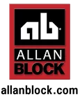

Home · Products
Masonry & Hardscape Products in Warsaw, Indiana
A full range of premium products, all sourced from manufacturers known for durability and lasting beauty — made to perform and made to last. For pricing, samples and availability, schedule an appointment and our team will walk you through the options.
What We Stock
Premium Materials for Every Project
From foundation to finish, our curated selection covers materials for projects of every size and style.
Brick
Classic, timeless and endlessly versatile — bringing warmth and character to homes, walls, walkways and outdoor features in a range of colors, textures and sizes.

Natural Stone
Quarried from the earth with one-of-a-kind color and texture. A premium choice for veneers, patios, steps and accent features where authentic beauty matters most.

Manufactured Stone
The look of natural stone at a lighter weight and friendlier price — ideal for accent walls, fireplace surrounds and exterior facades.

Retaining Wall Systems
Engineered for function and beauty. Hold back soil, level sloped yards and create clean, structured planting beds with a finished, designed look.

Pavers
The foundation of patios, walkways, driveways and pool decks — from clean modern lines to warm traditional layouts, built for Indiana weather.

Hardscape Materials
Edging, steps, caps, columns and accent pieces — the details that turn a good outdoor space into a polished, cohesive one.

Outdoor Fireplaces
The centerpiece of a memorable backyard. Fireplace materials and units that extend your season and give family and friends a reason to gather.

Wood & Gas Stoves
For year-round warmth, both wood and gas stoves from trusted manufacturers — the tradition of a wood fire or the convenience of gas.
Brands We Carry
An Authorized Dealer for Trusted Manufacturers
Warsaw Masonry Supply is an authorized Unilock dealer and an Allan Block dealer, and we stock brick, stone and veneer from Belden Brick, Buechel Stone, Delgado Stone, Natural Stone Veneers International (NSVI), Dutch Quality Stone, Cultured Stone, Champlain Stone and Halquist Stone.

Free Consultation
Not Sure Which Product Is Right for You?
Choosing between natural stone and manufactured stone, or between paver styles, is easier with an expert beside you. Our team offers free material selection, consultation and project estimation to help you weigh cost, appearance, durability and installation before you buy.
Good to Know
Products FAQ
Warsaw Masonry Supply carries brick, natural stone, manufactured stone, retaining wall systems, pavers, hardscape materials, outdoor fireplaces, and wood and gas stoves — covering materials for projects of virtually every size and style.
We stock a selection of pavers suitable for patios, walkways, driveways and other hardscape applications, available in a range of styles, colors and materials to complement almost any outdoor design.
Our team offers material selection and consultation to walk you through the differences in cost, appearance, weight, durability and installation, so you can choose the best fit for your specific project.
Because our products are sourced from manufacturers known for durability, most are well suited to Indiana's climate. During your consultation we can point you toward the specific brick, stone and pavers that perform best through repeated freeze and thaw cycles.
Yes. Warsaw Masonry Supply sells both wood and gas stoves alongside outdoor fireplaces, all sourced from trusted manufacturers known for durability and lasting performance.
The best way to compare colors and textures is in person. Schedule an appointment and our team will help you review samples so your final choice looks right against your home and landscape.
Let's Find the Right Materials
Schedule an appointment and our team will help you choose products, estimate quantities and source exactly what your project needs.